AI Daily · 2026-11-11 · Sources
中文 · English · Overview / 总览
- S01 Nov10 consumer product discovery2026-11-10
- S02 Launch and maker explanationDate not stated
- S03 Pairing and alarm interfaceDate not stated
- S04 Status protocol, limits and troubleshootingDate not stated
- S05 US app listing and version1.0.1Date not stated
- S06 Privacy and regional availability2026-11-09
- S07 November10 launch archive2026-11-10
- S08 ChromePing launch and visible maker discussionDate not stated
- S09 Product workflow and staged demoDate not stated
- S10 Monthly pricing and usage allowancesDate not stated
- S11 Privacy policy2026-10-04
- S12 TK product announcement2026-11-09
- S13 TK launch and maker plan details2026-11-10
- S14 Daily Note plugin READMEDate not stated
- S15 Publication-date corroboration only; 25-word source cap respected2026-11-09
- S16 Standalone Lottie AI introduction2026-11-09
- S17 Creation workflow2026-11-10
- S18 Lottie AI PH appearance2026-11-10
- S19 Credit allowances and consumptionDate not stated
- S20 Pricing FAQ and mode costDate not stated
- S21 Lottie AI specific terms2026-11-10
- S22 Sheets, Whiteboards and Data2026-11-10
- S23 Interactive connectors full tools2026-11-10
- S24 More ways to work with Claude2026-11-10
- S25 Use interactive connectorsDate not stated
- S26 Whiteboards helpDate not stated
- S27 Sheets helpDate not stated
- S28 Firefly new creative studio and agent capabilities2026-11-10
- S29 New era of creativity2026-11-10
- S30 November28.0 release2026-11-10
- S31 Relight operation and30credits2026-11-10
- S32 Restyle workflow and80credits2026-11-10
- S33 QuickCompare modes2026-11-10
- S34 MAX product availability distinctions2026-11-10
- S35 Premiere27.0 release notes2026-11-10
- S36 GenerativeMedia workflow cloud credits and eligibility2026-11-10
- S37 Soundscape four-track operation2026-11-10
- S38 Crosstalk operation and credits2026-11-10
- S39 Lumetri compatibility migration2026-11-10
- S40 Generation input range and reference workflow2026-11-10
- S41 Cloud voice processing boundaries2026-09-24
- S42 0.4.16 dated change log2026-11-08
- S43 Product workflow and US-dollar pricingDate not stated
- S44 Compatibility and setupDate not stated
- S45 Local processing and optional share boundaries2026-10-03
- S46 Maker post and visible user frictionDate not stated
- S47 November Pixel Drop2026-11-10
- S48 Gemini Intelligence: New features, on more devices2026-11-10
- S49 Stock sales announcement2026-11-10
- S50 Beni official store and specificationsDate not stated
- S51 Product tutorials and FAQsDate not stated
- S52 Support centerDate not stated
- S53 Beni homepageDate not stated
- S54 AROTI Introduces 27-Gram R1 AI+AR Glasses2026-11-10T15:00:00Z
- S55 Ring announces Ring Robotics2026-11-10
- S56 Rover Cam product specificationsDate not stated
- S57 Hands-on with Ring new AI drone camera2026-11-10
- S58 Practice Makes Precise: CoRL robotics updates2026-11-09
- S59 GR00T 2 research page2026-11
- S60 Gemini 4 Carbon and /swarm2026-11-10T08:00:00Z
- S61 Swarm documentation2026-11-10
- S62 Gemini 4 Carbon is now available2026-11-10
- S63 November 10 Agent Platform Workbench release notes2026-11-10
- S64 v1.38.0 release2026-11-10T04:59:49Z
- S65 Agent profile capability and selectionDate not stated
- S66 Executable plugin configuration editorDate not stated
- S67 Conversation budget display and limitationsDate not stated
- S68 Original release timestamp metadata2026-11-10T04:59:49Z
- S69 v1.59.0 release2026-11-10T17:17:02Z
- S70 Reusable hook and approval operationsDate not stated
- S71 Pinned GDK state machine contractDate not stated
- S72 Resume completed delegatesDate not stated
- S73 Original release timestamp metadata2026-11-10T17:17:02Z
- S74 November10 GA announcement2026-11-10
- S75 Chat build pathsDate not stated
- S76 Build and debug a chat flowDate not stated
- S77 Chat nodes and channelsDate not stated
- S78 Licensing and consumptionDate not stated
- S79 Stable 1.0 announcement2026-11-10
- S80 Modernization workflow and limitationsDate not stated
- S81 Product and integration overviewDate not stated
- S82 ERNIE Evolve research disclosure2026-11-09
- S83 ERNIE Evolve Results repositoryDate not stated
- S84 Research indexDate not stated
- S85 EyeQ original abstract and submission history2026-11-10T06:34:37Z
- S86 EyeQ full paper: system and evaluation2026-11-10T06:34:37Z
- S87 Lilo original abstract and submission history2026-11-10T16:07:13Z
- S88 Lilo full paper: system and evaluation2026-11-10T16:07:13Z
- S89 Project Progress Desk original abstract and submission history2026-11-09T21:53:26Z
- S90 Project Progress Desk full paper: system and evaluation2026-11-09T21:53:26Z
- S91 Scene by Scene / Ad Review and Edit original abstract and submission history2026-11-09T20:00:23Z
- S92 Scene by Scene / Ad Review and Edit full paper: system and evaluation2026-11-09T20:00:23Z
- S93 Original author public review template and data repositoryDate not stated
- S94 AI Sandbox / mlguide original abstract and submission history2026-11-10T00:02:31Z
- S95 AI Sandbox / mlguide full paper: system and evaluation2026-11-10T00:02:31Z
- S96 Introducing the Multimodal Knowledge Agent benchmark2026-11-10
- S97 MKA: Evaluating Multimodal Knowledge Agents on end-to-end professional tasks2026-11-10
- S98 MKA — 10 Showcase Examples dataset cardDate not stated
- S99 Multimodal Knowledge Agent benchmark evaluationDate not stated
Clive
2026-11-10 · near-three-day · Original product pages, documentation and maker statements; no editor-run product test
S03 — https://clive.bytortoise.com/ · S05 — https://apps.apple.com/us/app/clive-alarms-your-ai-sets/id6827766252 · S04 — https://clive.bytortoise.com/help · S06 — https://clive.bytortoise.com/privacy
ChromePing
2026-11-10 · near-three-day · Original product pages, documentation and maker statements; no editor-run product test
S09 — https://chromeping.com/ · S08 — https://www.producthunt.com/products/chromeping?launch=chromeping · S10 — https://chromeping.com/pricing · S11 — https://chromeping.com/privacy-policy
TK by Medium
2026-11-09 · near-three-day · Original product pages, documentation and maker statements; no editor-run product test
S12 — https://medium.com/blog/tk-a-new-private-notebook-app-from-medium-13d3d6efdce1 · S13 — https://www.producthunt.com/products/medium · S14 — https://github.com/Medium/tk-daily-note-plugin · S15 — https://techcrunch.com/2026/11/09/mediums-new-tk-app-brings-ai-assistance-directly-into-the-writing-process/
Lottie AI
2026-11-09 · near-three-day · Original product pages, documentation and maker statements; no editor-run product test
S17 — https://help.lottiefiles.com/create-an-animation-with-lottie-ai · S16 — https://lottiefiles.com/blog/working-with-lottie-animations/what-is-lottie-ai · S18 — https://www.producthunt.com/products/lottiefiles · S19 — https://help.lottiefiles.com/lottie-ai-plans-and-credits · S20 — https://help.lottiefiles.com/lottie-ai-faq-pricing-and-credits · S21 — https://lottiefiles.com/page/lottie-ai-terms
Claude Sheets, Whiteboards, Data and interactive connectors
2026-11-10 · near-three-day · Original vendor documentation and announcement, no independent hands-on test
S22 — https://claude.com/resources/articles/sheets-whiteboards-data · S24 — https://claude.com/resources/articles/more-ways-to-work-with-claude-sheets-whiteboards-and-interactive-connectors · S26 — https://support.claude.com/en/articles/18324319-get-started-with-claude-whiteboards · S23 — https://claude.com/resources/articles/interactive-connectors-full-tool · S25 — https://support.claude.com/en/articles/13454812-use-interactive-connectors-in-claude · S27 — https://support.claude.com/en/articles/18324300-get-started-with-claude-sheets
Adobe Firefly creative studio and Creative Agent
2026-11-10 · near-three-day · Original vendor documentation and announcement, no independent hands-on test
S28 — https://blog.adobe.com/en/publish/2026/11/10/adobe-firefly-premiere-mobile-ways-create-videos-edit-content-perfect-soundtrack-stories · S29 — https://news.adobe.com/news/2026/11/adobe-powers-new-era-of-creativity
Adobe Photoshop 28.0
2026-11-10 · near-three-day · Original vendor documentation; community reports attributed; no hands-on product test.
S30 — https://helpx.adobe.com/photoshop/desktop/whats-new/whats-new-in-adobe-photoshop-on-desktop.html · S31 — https://helpx.adobe.com/photoshop/desktop/repair-retouch/clean-restore-images/relight-images-with-interactive-lighting-controls.html · S32 — https://helpx.adobe.com/photoshop/desktop/create-open-import-images/create-images/fine-tune-image-attributes-with-generative-restyle.html · S33 — https://helpx.adobe.com/photoshop/desktop/get-started/learn-the-basics/compare-edits-with-quick-compare.html · S34 — https://blog.adobe.com/en/publish/2026/11/10/explore-new-ways-create-across-creative-cloud-adobe-firefly-while-advancing-craft-precision-choice-control
Adobe Premiere 27.0
2026-11-10 · near-three-day · Original vendor documentation; community reports attributed; no hands-on product test.
S36 — https://helpx.adobe.com/premiere/desktop/edit-projects/edit-with-generative-ai/generative-media-tool-faq.html · S35 — https://helpx.adobe.com/premiere/desktop/whats-new/release-notes.html · S40 — https://helpx.adobe.com/premiere/desktop/edit-projects/edit-with-generative-ai/generate-media-with-generative-media-tool.html · S37 — https://helpx.adobe.com/premiere/desktop/edit-projects/edit-with-generative-ai/add-generated-soundscape-to-your-timeline.html · S38 — https://helpx.adobe.com/premiere/desktop/add-audio-effects/basic-audio-editing/separate-overlapping-speakers.html · S34 — https://blog.adobe.com/en/publish/2026/11/10/explore-new-ways-create-across-creative-cloud-adobe-firefly-while-advancing-craft-precision-choice-control · S39 — https://helpx.adobe.com/premiere/desktop/correct-color/color-mode-fundamentals/lumetri-color.html · S41 — https://helpx.adobe.com/premiere/desktop/edit-projects/edit-with-generative-ai/about-cloud-based-ai-voice-features.html
Snipkit 0.4.16
2026-11-08 · seven-day · Original vendor documentation; community reports attributed; no hands-on product test.
S42 — https://getsnipkit.com/changelog · S44 — https://getsnipkit.com/download · S43 — https://getsnipkit.com/ · S46 — https://www.reddit.com/r/macapps/comments/1xpqxim/snipkit_update_the_screenshot_manager_you_can/ · S45 — https://getsnipkit.com/privacy
November Pixel Drop
2026-11-10 · near-three-day · Original vendor publication; no editor hands-on
S47 — https://blog.google/products-and-platforms/devices/pixel/november-2026-pixel-drop/ · S48 — https://blog.google/products-and-platforms/platforms/android/gemini-intelligence-november-features-devices/
Beni camera robot
2026-11-10 · near-three-day · Original vendor documentation and announcement, no independent hands-on test
S49 — https://m.sohu.com/a/1099734247_161795 · S50 — https://www.mondorobotics.com/products/beni-camera-robot · S51 — https://www.mondorobotics.com/zh/pages/support/product-tutorials · S52 — https://www.mondorobotics.com/zh/pages/support
AROTI R1
2026-11-10T15:00:00Z · main · Original vendor publication; no editor hands-on
S54 — https://www.globenewswire.com/news-release/2026/11/10/3399804/0/en/aroti-introduces-27-gram-r1-ai-ar-glasses-ahead-of-november-16-kickstarter-launch.html
Ring Robotics: Drone Cam + Rover Cam
2026-11-10 · near-three-day · Original vendor publication; no editor hands-on
S55 — https://www.aboutamazon.com/news/devices/ring-drone-cam-rover-cam-security-robot · S56 — https://ring.com/products/rover-cam · S57 — https://www.theverge.com/tech/1030601/ring-drone-cam-hands-on-price-release-date-ai-pilot
NVIDIA GR00T 2
2026-11-09 · near-three-day · Original vendor publication; no editor hands-on
S58 — https://blogs.nvidia.com/blog/robotics-simulation-advancements-corl/ · S59 — https://research.nvidia.com/labs/gear/gr00t-2/
Google Antigravity /swarm
2026-11-10 · near-three-day · Official product documentation and announcement; no hands-on validation.
S60 — https://antigravity.google/blog/gemini-4-carbon-in-google-antigravity/ · S61 — https://antigravity.google/docs/swarm · S62 — https://blog.google/innovation-and-ai/models-and-research/gemini-models/gemini-4-carbon-now-available/ · S63 — https://docs.cloud.google.com/release-notes
OpenHands 1.38.0
2026-11-10T04:59:49Z · near-three-day · Original vendor documentation read; not installed or independently tested
S64 — https://github.com/OpenHands/OpenHands/releases/tag/v1.38.0 · S65 — https://github.com/OpenHands/OpenHands/pull/19421 · S66 — https://github.com/OpenHands/OpenHands/pull/19453 · S67 — https://github.com/OpenHands/OpenHands/pull/18533
goose 1.59.0 / GDK
2026-11-10T17:17:02Z · main · Original vendor documentation read; not installed or independently tested
S69 — https://github.com/aaif-goose/goose/releases/tag/v1.59.0 · S70 — https://github.com/aaif-goose/goose/pull/13169 · S71 — https://raw.githubusercontent.com/aaif-goose/goose/v1.59.0/crates/goose-agent/README.md · S72 — https://github.com/aaif-goose/goose/pull/13106
UiPath Flow canvas chat agents
2026-11-10 · near-three-day · Original vendor documentation read; not installed or independently tested
S74 — https://docs.uipath.com/pt-BR/agents/automation-cloud/latest/release-notes/november-2026 · S75 — https://docs.uipath.com/pt-BR/agents/automation-cloud/latest/user-guide/conversational-agents-chat · S76 — https://docs.uipath.com/pt-BR/maestro/automation-cloud/latest/user-guide/build-a-chat-agent-workflow · S77 — https://docs.uipath.com/pt-BR/maestro/automation-cloud/latest/user-guide/conversational-chat · S78 — https://docs.uipath.com/pt-BR/agents/automation-cloud/latest/user-guide/conversational-agents-licensing
Modern Web Guidance 1.0
2026-11-10 · near-three-day · Original vendor documentation read; not installed or independently tested
S79 — https://developer.chrome.com/blog/modern-web-guidance-v1 · S80 — https://developer.chrome.com/docs/modern-web-guidance/modernization-workflow · S81 — https://developer.chrome.com/docs/modern-web-guidance
ERNIE Evolve
2026-11-09 · near-three-day · Original research report and repository root; author results, no independent reproduction
S82 — https://ernie.baidu.com/zh/research/posts/ernie-evolve/ · S84 — https://ernie.baidu.com/research/ · S83 — https://github.com/ernie-research/ERNIE-Evolve-Results
EyeQ
2026-11-10T06:34:37Z · near-three-day · Original abstract/history and targeted paper system, study and limitations sections read; author-reported research, not editor reproduction.
S86 — https://arxiv.org/html/2611.13640v1 · S85 — https://arxiv.org/abs/2611.13640
Lilo
2026-11-10T16:07:13Z · main · Original abstract/history and targeted paper system, study and limitations sections read; author-reported research, not editor reproduction.
S88 — https://arxiv.org/html/2611.14260v1 · S87 — https://arxiv.org/abs/2611.14260
Project Progress Desk
2026-11-09T21:53:26Z · near-three-day · Original abstract/history and targeted paper system, study and limitations sections read; author-reported research, not editor reproduction.
S90 — https://arxiv.org/html/2611.13287v1 · S89 — https://arxiv.org/abs/2611.13287
Scene by Scene / Ad Review and Edit
2026-11-09T20:00:23Z · near-three-day · Original abstract/history and targeted paper system, study and limitations sections read; author-reported research, not editor reproduction.
S92 — https://arxiv.org/html/2611.13178v1 · S91 — https://arxiv.org/abs/2611.13178 · S93 — https://github.com/anoubhav/ad-review-and-edit
AI Sandbox / mlguide
2026-11-10T00:02:31Z · near-three-day · Original abstract/history and targeted paper system, study and limitations sections read; author-reported research, not editor reproduction.
S95 — https://arxiv.org/html/2611.13386v1 · S94 — https://arxiv.org/abs/2611.13386
Multimodal Knowledge Agent (MKA)
2026-11-10 · near-three-day · Google original announcement, 25-page technical report targeted methodology/results/limitations, Artificial Analysis evaluation page and Hugging Face dataset card read. No benchmark executed.
S96 — https://blog.google/innovation-and-ai/models-and-research/gemini-models/multimodal-knowledge-agent-benchmark/ · S98 — https://huggingface.co/datasets/google/multimodal-knowledge-agent · S97 — https://storage.googleapis.com/deepmind-media/papers/mka_tech_paper.pdf · S99 — https://artificialanalysis.ai/evaluations/mka
clive-confirmed-iphone-alarms
厂商提供的助手与闹钟编辑界面；非本刊排程测试 Vendor assistant and alarm editor screens; not our scheduling test
Source page · Original source
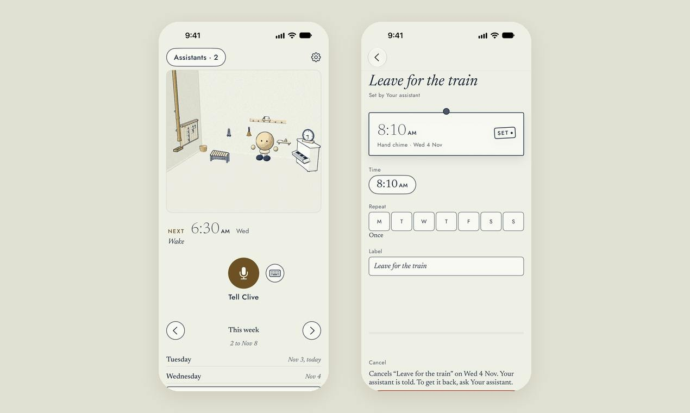
Original source visual for attributed editorial discussion; no hands-on test or independent reuse license claimed
chromeping-translated-phone-calls
厂商演示中的翻译通话界面；样例对话，非实拨 Vendor demo of translated calling; staged conversation, not our call
Source page · Original source
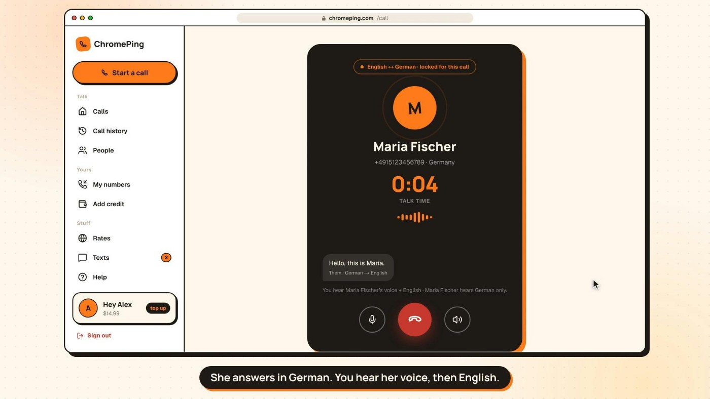
Original source visual for attributed editorial discussion; no hands-on test or independent reuse license claimed
medium-tk-inline-notebook
Medium提供的TK产品界面图；待像素核验 Medium-provided TK product visual; pixel review pending
Source page · Original source
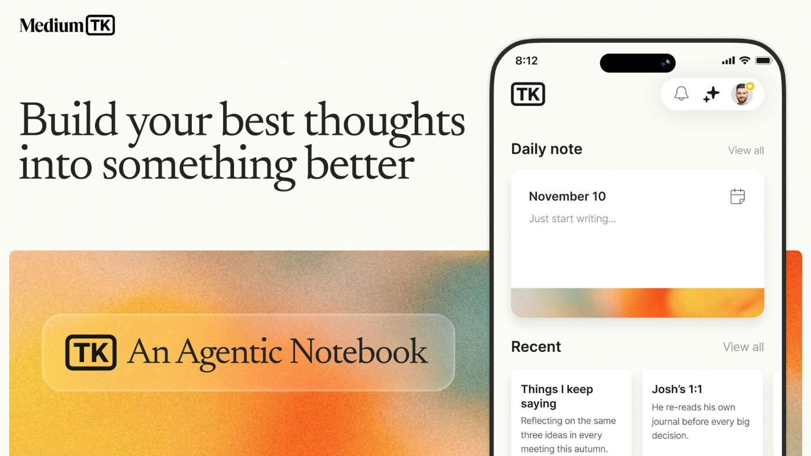
Vendor-supplied product visual
lottie-ai-editable-motion
厂商展示的动画对象与参数面板；非本刊生成 Vendor animation objects and controls; not an editor-generated result
Source page · Original source
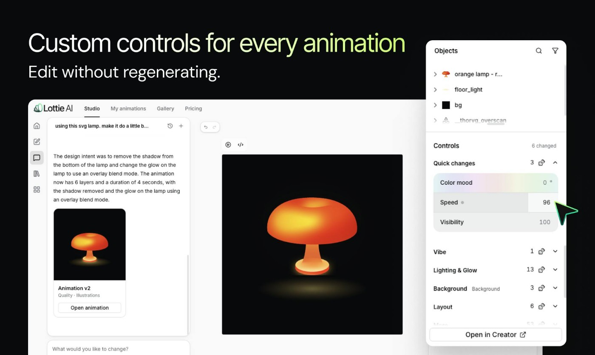
Original source visual for attributed editorial discussion; no hands-on test or independent reuse license claimed
claude-shared-workspace-artifacts
Anthropic视频帧：Data图表样例；未运行数据查询 Anthropic video frame showing a Data chart example; no query run by us
Source page · Original source
Original source visual for attributed editorial discussion; no hands-on test or independent reuse license claimed
firefly-creative-studio-plan-mode
Adobe设计工作区示例：可选对象与编辑工具 Adobe design workspace example with object selection and editing tools
Source page · Original source
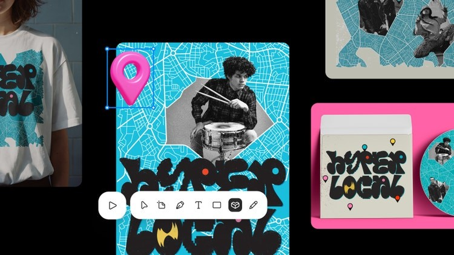
Original source visual for attributed editorial discussion; no hands-on test or independent reuse license claimed
photoshop-280-relight-restyle
Adobe官方Restyle图层与属性滑块界面 Adobe documentation: Restyle layer and Properties slider
Source page · Original source
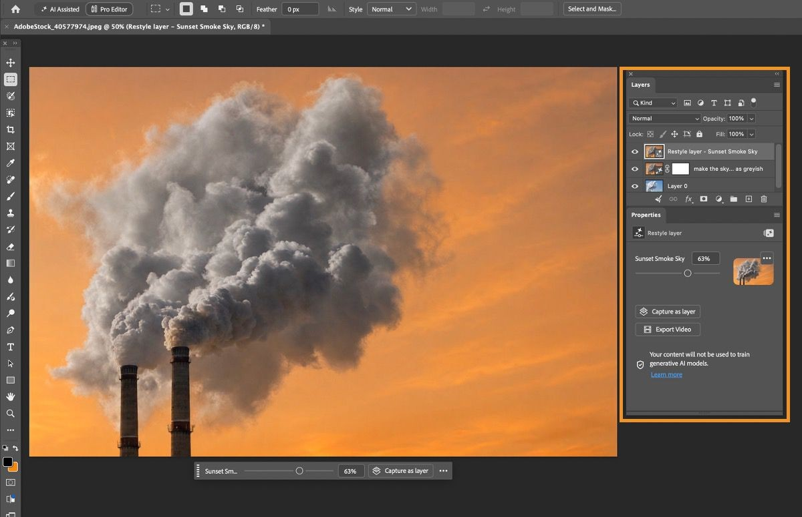
Original source figure for attributed editorial discussion; no independent reuse license asserted
premiere-270-timeline-audio
Adobe官方Crosstalk原轨与分离说话人、背景轨 Adobe documentation: original and separated speaker/background tracks
Source page · Original source
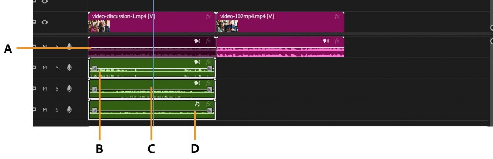
Original source figure for attributed editorial discussion; no independent reuse license asserted
snipkit-0416-import-shortcuts
厂商提供的Snipkit图库界面；非本刊操作测试 Vendor Snipkit library screenshot; not an editor-operated test
Source page · Original source
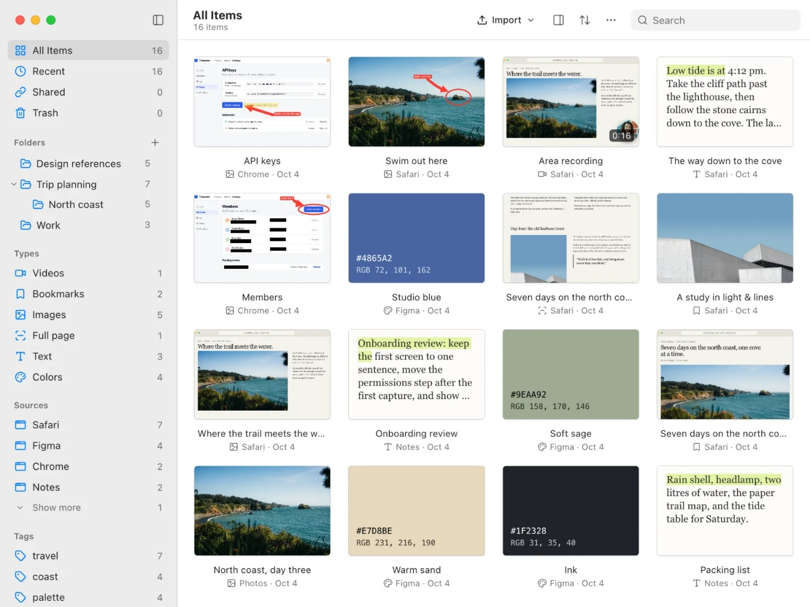
Original vendor product visual for attributed editorial discussion
pixel-november-drop-2026
Google提供的Pixel 10 Rambler消息输入示例；未实测 Google Pixel 10 Rambler message input example; not editor-tested
Source page · Original source
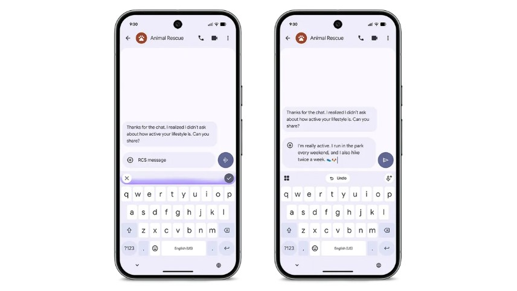
Original source visual for attributed editorial discussion; no hands-on test or independent reuse license claimed
beni-availability-stock-sale
妙动官方Beni宣传图；非野外跟拍实测 Mondo Beni promotional product visual; not a field test
Source page · Original source

Official product evidence; no reuse-license claim
aroti-r1-camera-free-preview
厂商R1佩戴宣传图，显示内容为示意；非透镜实拍 Vendor R1 wearing visual with illustrative display; not through-lens capture
Source page · Original source
Vendor-supplied editorial product illustration; no independent usage license asserted
ring-robotics-drone-rover-announcement
Ring官方Drone Cam产品图，非已交付或本刊实测证明 Official Ring Drone Cam visual; not delivery or editor-test evidence
Source page · Original source
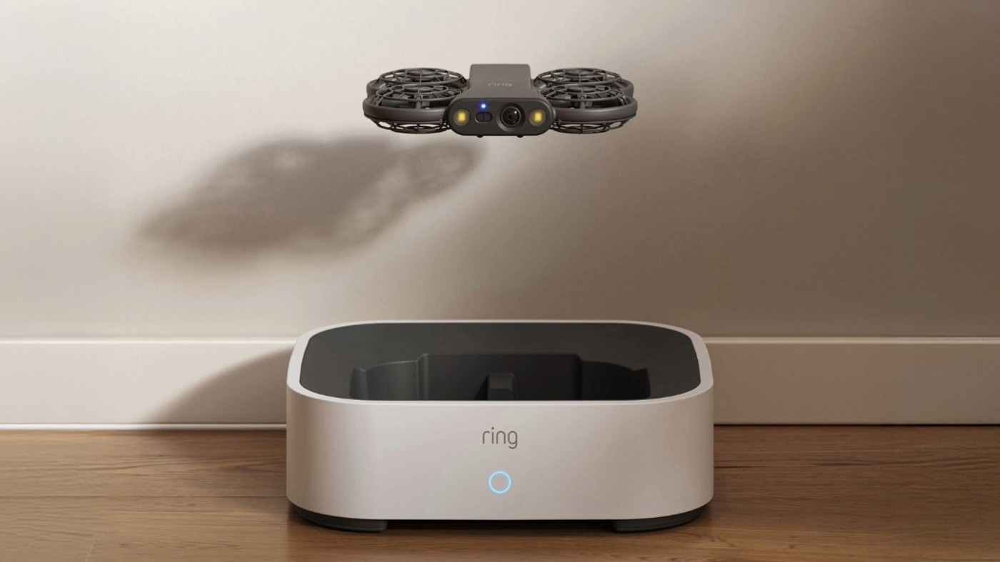
Vendor-supplied editorial product illustration; no independent usage license asserted
groot2-world-action-corl
NVIDIA研究页演示帧；作者实验，非本刊测试 NVIDIA research demonstration frame; author experiment, not our test
Source page · Original source
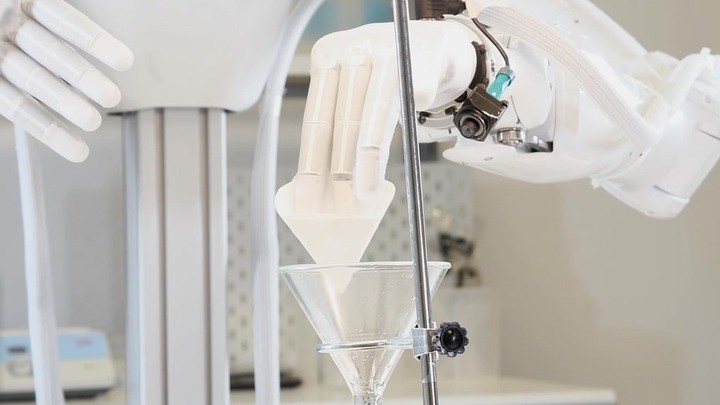
Original source visual for attributed editorial discussion; no hands-on test or independent reuse license claimed
antigravity-carbon-swarm
Google官方文档中的/swarm应用看板截图；未运行本刊仓库测试。 Google documentation screenshot of the /swarm app board; not an editor-run repository test.
Source page · Original source
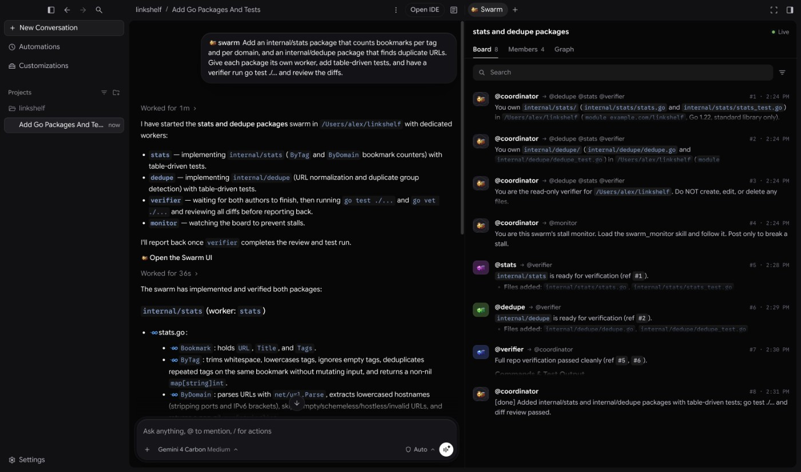
Original vendor documentation screenshot
openhands-138-profile-budget
维护者PR测试截图：Usage面板同时显示费用与预算；不是本刊实测 Maintainer PR test screenshot showing spending and cap in Usage; not an editor test
Source page · Original source
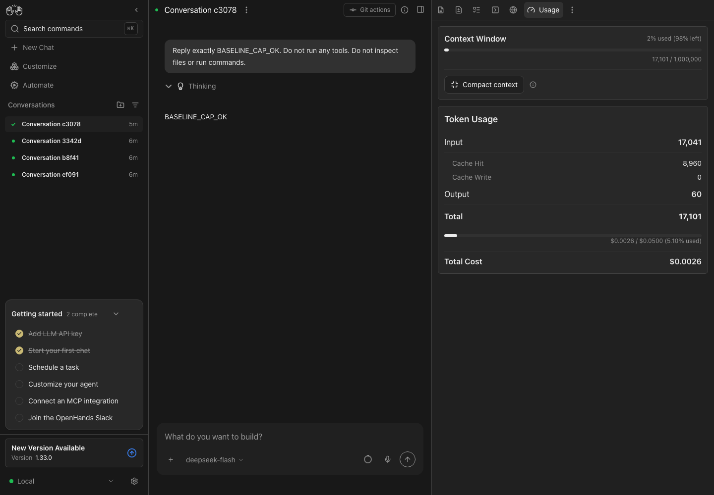
Maintainer supplied public PR screenshot
goose-159-hooks-resume
编辑依据固定版本SDK文档绘制的步骤示意；非产品UI、非实测 Editorial sequence diagram from pinned SDK documentation; not product UI or a runtime test
Source page · Original source
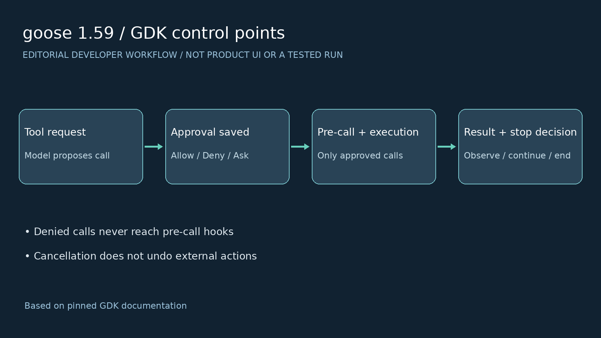
Original editorial diagram
uipath-flow-chat-ga
官方教程中的Flow画布与聊天调试界面；非本刊实测 Official tutorial screenshot of the Flow canvas and chat debugging; not an editor test
Source page · Original source
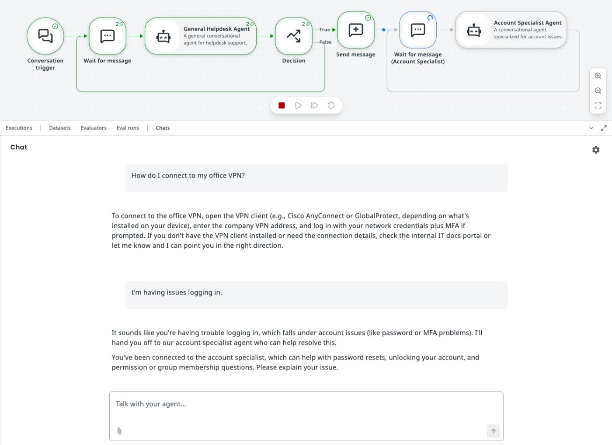
Vendor documentation screenshot
modern-web-guidance-10
编辑依据官方开发工具文档绘制的扫描与复核流程；非产品UI、非实测 Editorial scan-and-review workflow from official developer documentation; not UI or a tested run
Source page · Original source
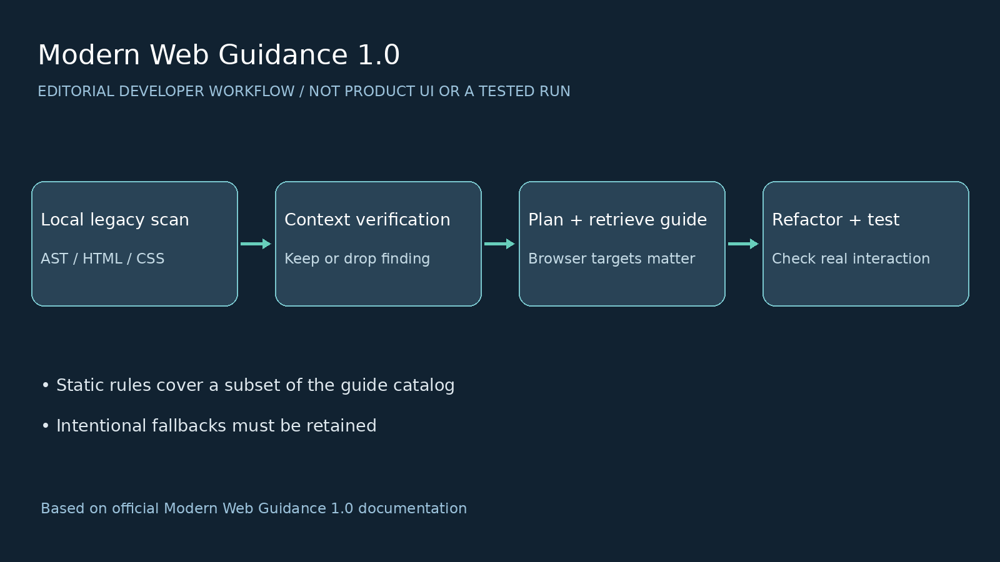
Original editorial diagram
ernie-evolve-research-results
百度原始研究架构图，展示系统分工；不是可操作产品界面 Baidu original research architecture figure; not an interactive product interface
Source page · Original source
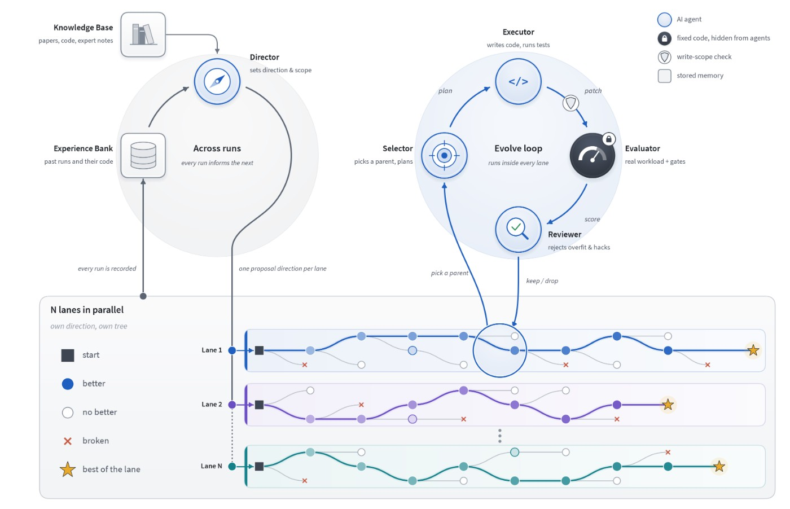
Original research figure; no reuse-license claim
eyeq-corneal-context
论文原图：手机角膜反光采集与场景分析；研究装置，不是普通前摄产品实测 Original paper figure: corneal capture and scene analysis; research apparatus, not a tested consumer front-camera feature
Source page · Original source
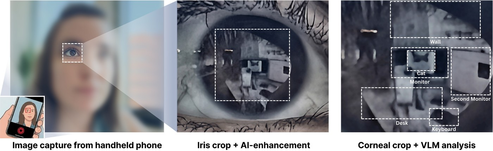
Original author paper figure; source attribution retained
lilo-peer-conflict-rehearsal
论文原图：Lilo红黄灯干预界面，英文展示版；儿童研究以希伯来语进行 Original paper interface: red/yellow mentor interventions in an English-localized build; study conducted in Hebrew
Source page · Original source
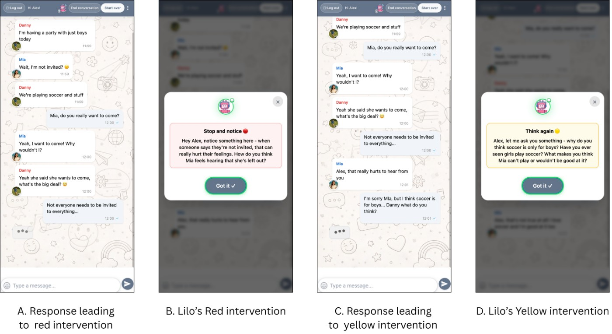
Original author paper figure; source attribution retained
project-progress-desk-receipts
论文原图：代理回执与项目总览，图中30项目为模拟演示数据，非用户真实任务 Original paper figure: receipts and overview; 30 projects are simulated demonstration data
Source page · Original source
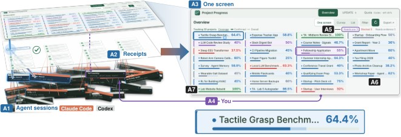
Original paper author figure; simulated demo data; retain attribution and simulation label
ad-review-scene-repair
论文原图：已确认问题与Fix入口，逐场景广告审阅板；非编辑实测 Original paper UI: confirmed issues and Fix controls in the ad review board; not editor-tested
Source page · Original source

Original author paper figure; source attribution retained
mlguide-sandbox-workflow
论文原图：AI Sandbox数据准备、实验配置与执行工具链；研究界面 Original paper figure: AI Sandbox data preparation, experiment configuration and execution toolchain
Source page · Original source
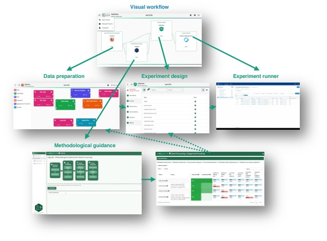
Original author paper figure; source attribution retained
mka-visual-knowledge-benchmark
Google原图：十类评测领域与文件示意；非真实任务成品 Google illustration of ten work sectors and file types; not actual task deliverables
Source page · Original source

Original source visual for attributed editorial discussion; no hands-on test or independent reuse license claimed